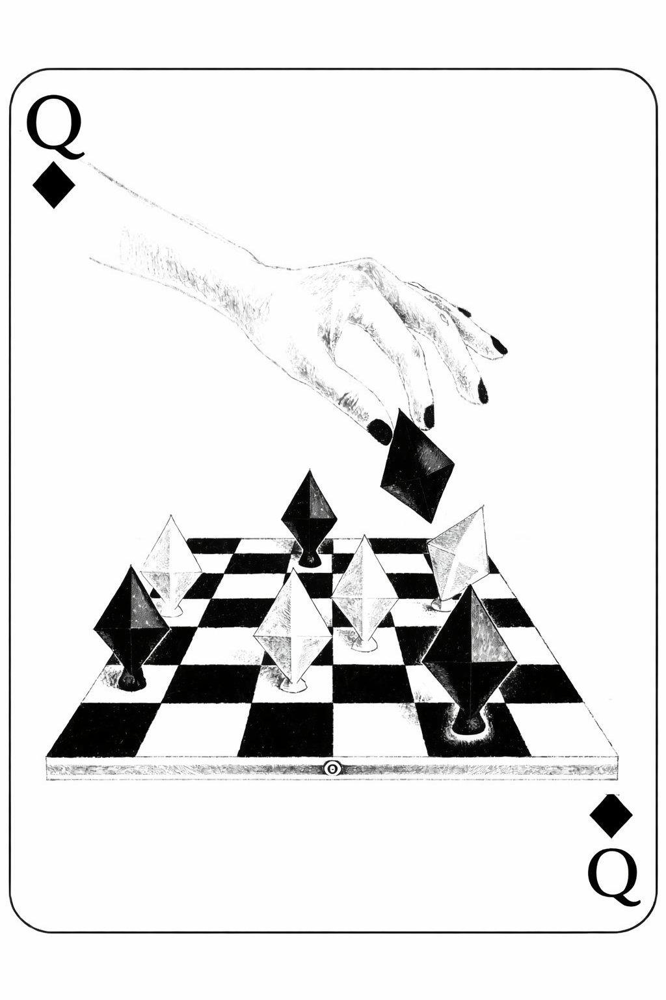

Dama de Treboles
Seguí hablando contigo
como quien vuelve a la mesa
después de una mala racha.
Con cuidado.
Como si las manos recordaran
lo que el orgullo intenta olvidar.
No sabía qué eras.
No eras amor —
el amor tiene forma,
tiene promesas que pesan—
y lo nuestro era apenas
una conversación que se alargaba más de lo necesario.
Era responderte rápido
y luego fingir que no estaba pendiente.
Era aprender tu risa
como quien memoriza una jugada
solo por curiosidad.
Al principio
no apostaba nada.
O eso me decía.
Cada coincidencia sumaba.
Cada silencio compartido
tenía una gravedad leve,
pero constante.
Cada mirada sostenida
era un as ambiguo
que empezaba a inclinar la balanza.
Veintiuno es el límite.
Después de eso,
uno ya no puede fingir que no está jugando.
Y yo todavía contaba en silencio,
intentando no darle más valor del debido,
intentando convencerme
de que era solo costumbre.
Pero algo cambió.
Empecé a notar que buscaba tus temas,
que estiraba las despedidas,
que encontraba excusas mínimas
para seguir la conversación.
Ya no era estrategia.
Era interés.
No fue un instante dramático.
Fue acumulación.
Un mensaje que esperaba más de lo normal.
Una sonrisa que me sorprendía solo.
La forma en que tu nombre
empezaba a ocupar espacio
donde antes había ruido.
No sentí vértigo.
Sentí inclinación.
No sé qué es esto ahora.
No es amor —
el amor necesita tiempo,
raíces,
territorio propio.
Pero tampoco es nada.
Es una mano que ya no quiero soltar.
Es dejar de contar probabilidades
y empezar a medir posibilidades.
Antes jugaba a no involucrarme.
Ahora juego a quedarme.
Tal vez no tenga veintiuno exacto.
Tal vez todavía falten cartas.
Pero esta vez
no estoy sentado por costumbre.
Estoy aquí
porque me interesa lo que puede pasar.
Y si hay riesgo,
que lo haya.
Prefiero perder intentando
que ganar sin haber sentido nada.
Porque lo más honesto no es decir
que tengo el control.
Es admitir
que desde hace un rato
dejé de jugar por impulso…
y empecé a jugar
porque me importa.

